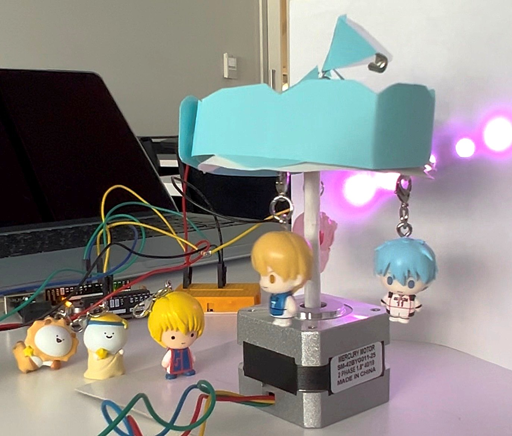

モーター：一定の速度と方向で回る。
NeoPixel：モーターが200ステップ（約1周）したらLEDの色が変わる。
#include ＜Adafruit_NeoPixel.h＞
// ===== モーター設定 =====
const int DIR = 8;
const int STEP = 9;
// ===== NeoPixel設定 =====
#define PIN 6
#define NUMPIXELS 5
#define BRIGHTNESS 50
Adafruit_NeoPixel pixels(NUMPIXELS, PIN, NEO_GRB + NEO_KHZ800);
long stepCount = 0;
void setup() {
pinMode(DIR, OUTPUT);
pinMode(STEP, OUTPUT);
pixels.begin();
pixels.setBrightness(BRIGHTNESS);
pixels.show();
}
void loop() {
digitalWrite(DIR, HIGH);
for (int i = 0; i < 400; i++) {
stepMotor(1000);
updateColor();
}
delay(500);
digitalWrite(DIR, LOW);
for (int i = 0; i < 400; i++) {
stepMotor(1000);
updateColor();
}
delay(500);
}
// ===== モーター1ステップ =====
void stepMotor(int delaytime) {
digitalWrite(STEP, HIGH);
delayMicroseconds(delaytime);
digitalWrite(STEP, LOW);
delayMicroseconds(delaytime);
stepCount++;
}
// ===== 色更新（200ステップごとに切替） =====
void updateColor() {
int colorIndex = (stepCount / 200) % 6;
uint32_t color;
switch(colorIndex) {
case 0: color = pixels.Color(255, 0, 0); break; // 赤
case 1: color = pixels.Color(0, 255, 0); break; // 緑
case 2: color = pixels.Color(0, 0, 255); break; // 青
case 3: color = pixels.Color(255, 255, 0); break; // 黄
case 4: color = pixels.Color(0, 255, 255); break; // 水色
case 5: color = pixels.Color(255, 0, 255); break; // 紫
}
for (int i = 0; i < NUMPIXELS; i++) {
pixels.setPixelColor(i, color);
}
pixels.show();
}
